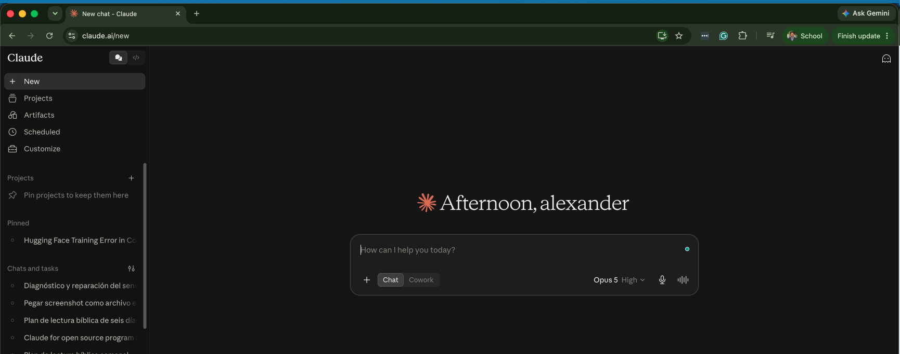
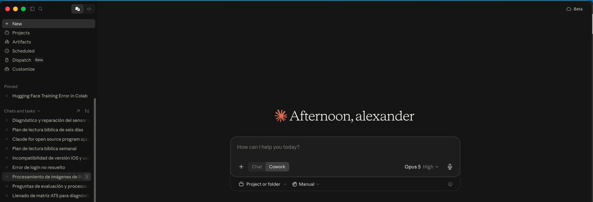
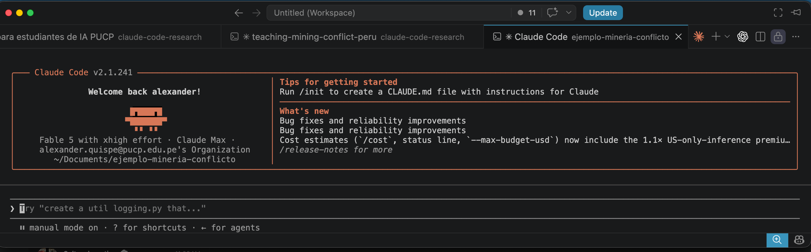
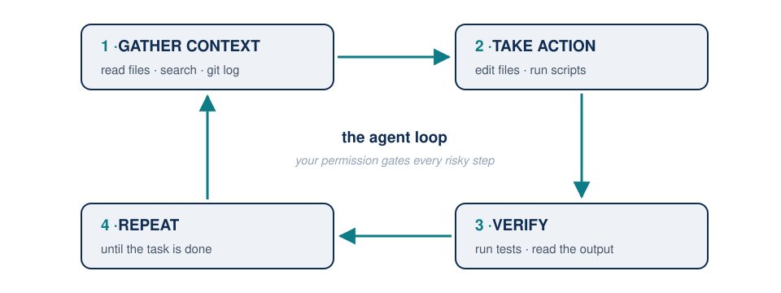
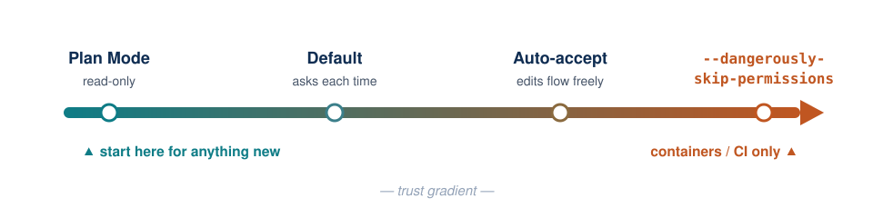
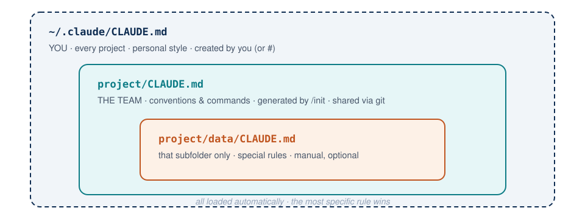
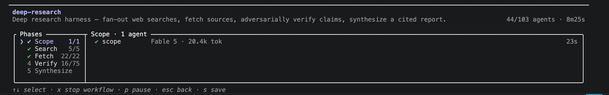

Claude Code for Research
Session 1 — Trust and Verification · Faculty Workshop
Faculty of Social Sciences, PUCP · with support from Q-LAB
Today’s plan (3 hours)
| Time | Block | Topic |
|---|---|---|
| 6:00 – 6:20 | 1 | What Claude is and its three products |
| 6:20 – 6:50 | 2 | VS Code and the terminal, step by step |
| 6:50 – 7:10 | 3 | Configuration: model, effort, modes |
| 7:10 – 7:20 | ☕ | Break 1 |
| 7:20 – 7:45 | 4 | First things first: /init and markdown |
| 7:45 – 8:05 | 5 | Working: converse and organize |
| 8:05 – 8:15 | ☕ | Break 2 |
| 8:15 – 8:55 | 6 | ⭐ Literature: search, verify, and download |
| 8:55 – 9:00 | 7 | Wrap-up and homework |
Q-LAB assistants are in the room: if you hit a technical snag, raise your hand and they’ll help without stopping the class.
Block 1 — What Claude is
Claude Code, in one sentence
An agent that lives on your computer, can see your files, and can work on them for you.
It’s not a chat where you paste text. Practically:
| The usual chat | With Claude Code |
|---|---|
| “Summarize this paper” (and you paste the text) | “Read the 40 PDFs in this folder, tell me which ones use panel data, and make a table” |
| You copy the answer to Word | It creates and edits files directly |
What’s concretely useful for you?
In a week of research and teaching, Claude Code can:
- Verify a bibliography reference by reference against Crossref
- Sort and rename that chaotic PDFs folder you’ve kept for years
- Extract a table from one PDF to Excel — or from 40 PDFs to a single table
- Write and compile documents and slides in LaTeX, even if you don’t know LaTeX
- Explore a dataset and return statistics and charts
None of this requires programming
It does require knowing what to ask and how to verify — that’s what this workshop is about.
One brain, three products
Before installing anything, situate yourselves: Claude is three distinct things, easy to confuse. Let’s see them one by one.
- claude.ai — the chat in your browser (you likely know this one)
- Claude Cowork — a desktop app to work over folders
- Claude Code — the terminal agent (today’s focus)
1 · claude.ai — the chat

Lives in the browser (look at the address: claude.ai). Like ChatGPT: you paste text and it replies. A great tutor for concepts — but it doesn’t see your files.
2 · Claude Cowork — the desktop app

An installed app, no terminal — notice the Select folder… button below and the “Describe a task” box: you pick a folder and describe the task, and the agent works on those files. Ideal for documents — but requires a paid plan ($20/month or more).
3 · Claude Code — today’s agent

The same agent, inside the VS Code terminal — this is how you’ll see it today: welcome panel on top, where you type below. It sees your files, executes, verifies. Works with a subscription or just an API key (pay-as-you-go).
Which one do I need? How much does it cost?
| Product | For whom? | Access |
|---|---|---|
| claude.ai (chat) | Questions, drafts, explanations | Free with limits · Pro $20/mo |
| Claude Cowork | Document work without a terminal | ❌ Paid plan only ($20/mo or more) |
| Claude Code | Research: data, PDFs, LaTeX | ✅ Subscription or API key only (pay-as-you-go) |
- The chat is like a tutor: excellent for explaining a concept (“what is difference-in-differences?”).
- Claude Code is the research assistant: it works on your folders, your data, your papers.
- Workshop rule: use the Opus model for everything. Fable only for fine writing — it’s expensive and caps out quickly.
How it works: the agent loop

- Every action goes through tools: read, edit, execute, search.
- Every risky action asks for your approval first.
- You direct the research; Claude is a very fast assistant.
Block 2 — VS Code and the terminal
Why do we work in Visual Studio Code?

Everything in one window: your files on the left, the document in the center, and the terminal below where Claude lives. It’s free, works the same on Windows and Mac, and opens PDFs, data, and text without changing apps.
One extension you’ll want: vscode-pdf

To read PDFs inside VS Code (your papers, and the PDF LaTeX compiles):
- Click the Extensions 🧩 icon on the left bar
- Search
pdf - Install vscode-pdf (by tomoki1207) — one click and done
Without this, every PDF opens in a separate app and you lose the “everything in one window” flow.
Bring your project into VS Code
For the workshop we’ll send you the project folder ready to download.
- Download it and place it under Documents (same on Windows and Mac)
- In VS Code: File → Add Folder to Workspace…
- Pick the folder → it appears in the left panel
With that, VS Code now “sees” your project: we’ll copy the path from that panel into the terminal in the next step.
Same steps later for any folder of yours: thesis, courses, papers.

Open the terminal: one click

Menu Terminal → New Terminal. Tip: if the bottom panel feels small, repeat the menu and pick New Terminal Window to get a large separate window.
What is “the terminal”? (no fear)
A window where you type text instructions instead of clicking.
Good news in 2026:
- You don’t need to memorize commands — Claude writes and runs them for you.
- You only need ONE:
cd(change directory = “switch into this folder”).
Why just one? Because the only thing you do by hand is tell it which folder to work in. Everything else is asked in conversation.
Step by step: open Claude in your folder
- Open VS Code → Terminal menu → New Terminal. Tip: if the bottom panel feels small, repeat Terminal → New Terminal Window to get a large separate window (sometimes you have to open a terminal once before that option appears).
- In VS Code’s left panel, find your research folder → right‑click → Copy Path.
- In the terminal, type
cd, a space, paste the path, Enter. - Type
claude, Enter. - It will ask if you trust that folder → Yes.
cd /Users/your-name/Documents/my-research
claudeThat’s ALL the “code” this workshop will ask you to type.
🧯 Rescue kit — save this slide
We all get stuck. This solves 95% of tangles:
| Problem | Solution |
|---|---|
| Claude is doing something I don’t want | Esc — interrupts without breaking anything |
| I want to quit Claude | Ctrl+C twice |
| I switched into the wrong folder | Quit (Ctrl+C ×2), cd to the right path, run claude again |
| I closed everything — did I lose my conversation? | No: claude --resume lists your past sessions |
| Nothing responds and I don’t know why | Close the terminal window, open a new one, and resume |
Tip
And the universal tool: screenshot the problem and paste it into Claude (Ctrl+V / Cmd+V in the terminal chat) and ask “why am I seeing this?”. Claude self‑debugs surprisingly well.
Block 3 — Configuration and diagnostics
Before configuring: product ≠ model
In Block 1 you picked the product: Claude Code. The first thing you’ll configure is the model — and they’re easy to confuse:
| The product | The model | |
|---|---|---|
| What it is | The entryway — where you use Claude | The reasoning brain — who answers you |
| The names | claude.ai · Cowork · Claude Code | Opus · Fable · Sonnet · Haiku |
| Analogy | the vehicle | the engine |
One product can mount different engines — that’s why Claude Code has a /model menu to switch brains.
So no, “Is Opus the same as Claude Code?” — Claude Code is from where you work; Opus is who thinks.
Choose the model (one time)
Inside Claude, type /model and pick Opus.
| Model | When |
|---|---|
| Opus | ✅ All day‑to‑day work: data, tables, LaTeX, organization |
| Fable | Only fine paper writing — it’s pricey and the cap runs out fast |
| Sonnet, Haiku | You don’t need them today |
If something ever answers “oddly”, first check /model: which model is selected?
What “effort” means
Effort is how much the model thinks before answering — like choosing between a quick reply or a careful analysis.
| Less effort | More effort | |
|---|---|---|
| Speed | answers faster | thinks longer |
| Depth | fine for simple tasks | better on hard problems |
| Cost | uses fewer tokens | uses more tokens |
- How to adjust: inside
/modelwith ←/→ — the orange bar shifts: low · medium · high · xHigh… - Workshop recommendation: keep it at High or xHigh. The model also self‑tunes based on each request’s difficulty.
Work modes (and the handbrake)
Press Shift+Tab to switch modes — there are four, shown in Claude’s bottom bar:

- plan mode on — only reads and proposes a plan; no changes. Deep dive in Session 2.
- manual mode on — asks before every action.
- accept edits on — edits without asking; commands still ask.
- auto mode on — executes edits and commands. Today’s mode.
There’s a flag that disables all protections (--dangerously-skip-permissions) — don’t use it.
What it looks like in your terminal

Press Shift+Tab a few times now and watch the label rotate. Leave it on auto mode on so the upcoming exercises run end‑to‑end without stopping for each permission.
Last setup: the library key
We set this up now so we don’t waste time later. In your browser, open this address as‑is (it’s JSTOR through the proxy):
https://pucp.elogim.com/auth-meta/login.php?url=https://www.jstor.orgIt will ask for your campus username and password — the same ones you use for your university systems. Leave that tab open for the rest of class. Your browser is now recognized as on-campus (PUCP in this example).
For another journal, change only what comes after url=:
https://pucp.elogim.com/auth-meta/login.php?url=<journal URL>Important
You are not signing up for JSTOR, Wiley, or anything else. Your personal JSTOR account does not grant download access — it only lets you read on screen. The download button appears only under your university’s institutional session (via your library proxy).
Your turn: what am I missing?
With everything configured, ask literally this:
Check my environment: tell me what versions of Python and LaTeX I have,
what I’m missing to work with data, PDFs, and documents in this workshop,
and how to install it.What to observe: the agent runs commands and shows you what it’s doing. It’s not answering from memory: it’s looking at your machine.
Note
This exercise doubles as diagnostics: if something’s missing, the agent itself tells you how to install it — and can install it for you. First lesson in attitude: when you have a technical doubt, ask Claude.
Your turn: get to know your machine
Most people don’t know what machine they have — and sometimes it’s more powerful than they think. Ask:
What computer do I have? Tell me my processor (CPU), whether I have a GPU
or AI acceleration, and how much RAM. With those specs, what AI tools could
I run locally? For example, could I transcribe class audio with Whisper,
and how fast?What to observe: the answer is different for each person — Claude inspects your actual hardware and adapts its recommendation.
Tip
Save that answer: in Session 2 we’ll transcribe a recorded class with Whisper, and speed will depend exactly on this (with GPU or a recent chip: minutes; CPU‑only: slower, but it still works).
☕ Break 1 — 10 minutes
Back at 7:20 pm
Block 4 — First things first: /init
Before asking anything: give it context
You could start chatting right away… but Claude knows nothing about your project: what it contains, how it’s organized, what rules it follows.
That’s why the first command in any new project is:
/initClaude explores the whole folder — reads your documents, your data, your PDFs — and drafts a file called CLAUDE.md with what it found: what the project is about, how it’s organized, which conventions it follows.
That file becomes the project’s memory: Claude reads it automatically every time you start a session there. You’ll never again need to re‑explain what your research is about.
What is a markdown (.md) file?
It’s plain text with formatting marks — opens with any editor, tiny size, and readable the same 20 years from now.
| What you write | What it means |
|---|---|
# Title |
heading |
## Subtitle |
subheading |
- item |
bullet |
**word** |
bold |
`code` |
highlight a command or path |
Why it matters for you: it’s the format Claude uses for everything it wants to remember — project memory, meeting notes, a literature summary. Unlike Word, it’s readable both by you and the machine, and you can version and diff it.
A .md open in VS Code

This is how it looks inside — and it’s not a toy example: it’s today’s project CLAUDE.md. The #, **, and bullets, in plain view. ▸ Click the magnifier icon (top‑right, in the circle) and VS Code reads it for you.
…and how VS Code renders it

Same file, two views: on the left the marks, on the right the formatted document. That’s why markdown works so well with an agent — it writes it, you read it comfortably.
Your turn: /init in your project
/initLet it work (it may take a couple of minutes; it’s reading everything).
When it finishes, open and read it: CLAUDE.md appears in VS Code’s left panel.
Memory has levels

None exist by default: the project one is generated by /init; the personal one is created by you (or the # shortcut); the subfolder one is optional.
Block 5 — Now we work
Your turn: the first conversation
Now inside your real folder, try these — none of them modify anything, they only read:
Give me a summary of this folder: what files are here and what’s the project about?Which files look like duplicate or outdated versions?Explain this folder’s structure for a new research assistant, and publish it
as a page I can share.What to observe: it answers about your actual files, citing names and contents — a web chat cannot do that. And the third prompt has a bonus: seeing “to share it”, Claude loads one of its skills (internal manuals it activates when the task warrants it — you’ll see ⏺ Skill(artifact-design) in the terminal) and publishes the explanation as a web page (Artifact): link lives in claude.ai, private until you share it.
What used to be a Word attachment for a new RA now comes out of the terminal ready to send.
The example project
From here on we’ll work over a folder we provided: ejemplo-mineria-conflicto/. It’s a real research project, half‑started and deliberately messy.
The question: in Peru’s mining departments, does mining revenue reduce social conflict — or does it mainly change what people protest about?
| Folder | What’s there |
|---|---|
datos/ |
10 conflict reports from the Ombudsman’s Office · mining output and employment · dialogue tables · 251 congressional bills |
papers/ |
8 PDFs with impossible names |
notas/ |
The researcher’s scattered notes |
Use it today and keep it. If you prefer, every exercise works the same over one of your own folders.
Your turn 1 — identify: the names
Let’s start by learning what each file is. Look at papers/: there are things like descarga.pdf, el pasado importa - copia (2).pdf, articulo minería (1).pdf.
In the papers/ folder there are article PDFs. Open them and rename them as
lastName-year-keyword.pdf. BEFORE renaming anything, show me the list of
changes you plan to make.What to observe:
- Asking for the plan before execution is the #1 safety habit.
- The agent reads the PDF content — it doesn’t guess from the filename.
- Three of those papers are off-topic. Does it detect them? Ask: “which of these are not about mining and social conflict in Peru?”
Your turn 2 — file away: the structure
Now you know what each thing is. Next: where it goes:
I want this project organized like a replication package ready to send
to a journal: clear folders (data, code, results, manuscript) and a README
that explains how to reproduce everything.
Propose the plan first — what you’d move and why. Don’t change anything yet.What to observe: you get a concrete plan over your real files. Read it, change what you don’t like, and only then authorize execution.
When you finish, ask it to update CLAUDE.md with the new structure — so the project memory stays current.
☕ Break 2 — 10 minutes
Back at 8:15 pm
Block 6 — The literature: search, verify, and download
Launch first, talk later
/deep-research takes 15–20 minutes — we’ll start it now and continue class while it runs. Copy this prompt:
/deep-research What does the empirical evidence since 2015 say about the
relationship between mining activity and social conflict in Peru?
Prioritize quantitative studies, systematic reviews, and official reports.
Besides the report, do these three things:
1. Download to the papers/ folder every open-access document you cite
(working papers, preprints, reports, theses), named lastName-year-topic.pdf
and grouped by subtopic.
2. Create a file pending.md with the relevant sources you could NOT
download — subscription journal articles, books and book chapters.
For each include: full APA citation, DOI or ISBN, publisher link,
and the reason (subscription, book, no open version available).
3. In the report, cite those sources like the rest but mark them as
[pending download].It runs in the background: your session stays free. Watch it with /workflows.
Why also ask for what it could not download?
Because in the social sciences what’s excluded is often the most cited: a field’s classic book, or a subscription journal’s article.
If you only asked “download what you find”, those sources would silently vanish from your review — and a literature review with an invisible hole is worse than a short one.
With this prompt you get two products:
| File | What it contains | For |
|---|---|---|
papers/ |
The PDFs it did obtain | Read and cite today |
pending.md |
Full citation, DOI/ISBN, link and reason | The to‑do list for your library proxy |
We’ll come back to pending.md at the end of the block: it’s exactly what your university library proxy will resolve.
What just happened under the hood

What would take a human RA two or three weeks, a parallel team of agents delivers within this block. Not magic: they’re many, at once — and while they work, you keep doing your own.
It’s not “search”: it’s a team

Your question split into five angles; each agent explores its angle, reads and extracts, and they cross‑verify before writing the report. It’s an academic seminar structure, not a search engine’s.
How many are they? Two numbers not to confuse: at once up to 16 in parallel; in total, across phases, hundreds — in a real workshop run, around 100. You can tune size with /config workflowSizeGuideline: small <5 · medium <15 (default) · large <50.
Why this matters for verification
A search engine gives you links. This team gives you already‑cross‑checked claims:
- Each agent looks from a different angle — nobody depends on a single lucky query.
- Agents check each other: what one asserts, others verify against the source.
- What doesn’t survive that vote doesn’t make it into the report; what couldn’t be confirmed is marked unverified.

Screenshot of /workflows in a real run: phases Scope → Search → Fetch → Verify → Synthesize. Look at Verify: 75 agents dedicated just to checking others’ claims.
Tip
Start reading the report from what’s marked unverified: that’s where your researcher judgment makes the difference.
⭐ Back to the report: verify
It should be done now. Open it… and before using a single citation, ask this:
From the bibliography you assembled, verify each reference against
Crossref: authors, year, title, volume, pages, and DOI. Tell me which
have any mismatch and what the correct data is.
Don’t tell me it’s fine if you couldn’t check it.What to observe: the report already cited a source for each claim — and verification still finds things. A broken DOI is caught with one click; a DOI resolving to the wrong paper can survive peer review.
The workshop’s central lesson
Remembering and verifying are distinct work modes, and the second must be requested explicitly. Anything that goes into your publications runs through the verify mode.
The limit: what it can and cannot download
| Source type | Can it get it alone? |
|---|---|
| Working papers (NBER, SSRN, RePEc), preprints (arXiv) | ✅ Yes |
| Official reports, theses, institutional repositories | ✅ Yes |
| Published articles in subscription journals | ❌ No — it reaches the abstract, not the PDF |
| Books | ❌ No — and in the social sciences books are often the key sources |
Not a tool flaw: those doors are closed to anyone not logged in. You are logged in.
The solution: one login

One login — your university library proxy, with your campus credentials — and the browser is recognized as “on campus”: all subscribed journals open without entering anything else. You already did this at the start of class; that open tab is the key.
Why didn’t /deep-research use that session?
You logged in at the start of class… and yet the report had items pending. Not an error:
Important
/deep-research agents do not browse from your computer: they search and read from Anthropic’s servers. They don’t see your browser cookie — for them, those journals are still locked.
Hence the division of labor you’ve seen, now with names:
| Who | What they do | With what |
|---|---|---|
| The agents | Find everything and download what’s open; list the rest | Web search, no session |
| Your browser | Downloads what’s under subscription | The library‑proxy session you opened |
That’s why pending.md is not a consolation prize: it’s the bridge between the two halves.
Let it prepare, you do the clicks
Claude cannot download through your library proxy for you — it doesn’t have your session. But it can set the work up:
Take pending.md and build a list where each source has its download link
prepped through the library proxy in this format:
https://pucp.elogim.com/auth-meta/login.php?url=<article link>
Order them from most to least cited and save as download.md.Then you: click each link → download → everything into papers/. With the session already open, each article takes seconds.
And when you’re done, hand it back:
I’ve downloaded the PDFs into papers/. Rename them using the
lastName-year-topic.pdf format, verify each one matches its citation,
and update pending.md with what’s still missing.Division of labor, once more
Same principle as always, and worth engraving:
| You | Claude |
|---|---|
| Log in · click · download | Search · assemble links · organize · rename · verify |
Why it is this way: Claude never types passwords for you — security rule — and when working with an API key, it also cannot drive your browser.
Can it also do the actual clicks?
It can: the Claude in Chrome extension lets it operate your already‑logged‑in browser — with it, downloading from pending.md can be fully automatic. But it requires a paid subscription (Pro, $20/mo or more); it does not work with the API key we’re using today.
Tip
Even so, the time saver is huge: the slow part wasn’t clicking; it was knowing what to look for, where it is, and whether the citation is correct.
A page “loading” doesn’t mean there’s a subscription — you must reach the PDF. Verified missing in our case: Oxford and Management Science/INFORMS (i.e., neither QJE nor ReStud are available via this route).
The finale: the review, in LaTeX and PDF
Everything in this block converges here. Ask:
With the deep-research report and the PDFs in papers/, write the
“Literature Review” section of my paper: 3–4 pages, organized by themes
(not paper-by-paper), with author–year citations and a referencias.bib file.
Create it as a standalone LaTeX document (literature-review.tex),
compile it to PDF, and open the result. If compilation fails, read the
error, fix it, and retry until it works.What to observe:
- You didn’t write a single line of LaTeX — Block 1’s promise delivered. If compilation fails, it reads the error and self‑corrects: it’s the agent loop.
- The PDF opens inside VS Code — that’s why you installed vscode‑pdf.
- It’s a draft for your editing: structure and citations are there (and verified); you bring the voice and argument.
Block 7 — Closing
What you can now do
- Distinguish the chat, Cowork, and Claude Code — and what each costs.
- Move around VS Code and open the terminal with one click.
- Open Claude in your folder with the one necessary command (
cd). - Use the rescue kit: Esc, Ctrl+C ×2,
claude --resume. - Give your project memory with
/init+CLAUDE.md. - Central lesson: memory ≠ verification. Always ask to verify.
- Download from your university library via the “you log in, it operates” pattern.
Homework for next time
Pick one real, small task from your own research:
- Run
/initin a folder from your work and read theCLAUDE.mdit generates. Fix what you don’t like. - Ask it to organize and rename a folder of accumulated PDFs — with a proposed plan first.
- Verify the bibliography of something you’re writing: “check each citation in this document against Crossref and tell me which ones have errors.”
Next session: the complete research flow — automatic literature review with /deep-research, data dashboards, LaTeX without writing LaTeX, and how to turn recorded classes into working material.
References
- Written guide for this workshop (script + manual):
profesores/folder in the course repository - Sant’Anna, P. H. C. — My Claude Code Workflow: psantanna.com/claude-code-my-workflow
- Official docs: code.claude.com/docs
- PUCP Library: biblioteca.pucp.edu.pe
These slides were written, laid out, and compiled with Claude Code — including analysis of pilot‑class recordings with the Q‑LAB assistants.
Appendix — likely Q&A follow‑ups
When there truly isn’t access
There’s almost always an open version: NBER · SSRN · arXiv · RePEc, the author’s repository, or the [PDF] link on the right in Google Scholar.
Warning
The working paper is not the published article — sometimes with a different title and even different authors. For citing, use the published version; for reading, either is fine — as long as you know which you have.
For books — often central in several of your disciplines — the library catalog is still essential. This tool complements, it doesn’t replace.
Can we shorten the wait?
There’s no time knob — but there are three real levers:
| Lever | How |
|---|---|
| Fewer agents | /config workflowSizeGuideline=small → target <5 agents (default is up to 15) |
| Narrower question | A time period, a country, a source type. Broader questions open more fronts and take longer |
| Stop it manually | /workflows → select the run → x stop · p pause/resume |
- In
/workflowsyou see live how many agents there are, token counts, and elapsed time. - If a run gets large (over 25 agents), Claude Code shows a large run heads‑up.
The practical strategy is today’s: launch it and keep working. It’s not wasted time if you’re not staring at it.
Claude Code for Research — Faculty Workshop · PUCP 2026